Executive Summary
Active Directory Attack Chain — Full Kill Chain from Guest Brute Force to Domain Compromise
On March 19, 2026, Microsoft Defender XDR generated a High-severity unified incident (ID 7, Priority 100) titled "Hands-on keyboard attack was launched from a compromised account." The incident correlated 29 alerts across 7 MITRE ATT&CK tactics — Initial Access, Execution, Persistence, Privilege Escalation, Credential Access, Discovery, and Lateral Movement — involving 4 devices and 4 user accounts. XDR automatically triggered Attack Disruption to contain the compromised accounts. The investigation revealed a full kill chain from Guest account brute force through RBCD-based domain compromise.
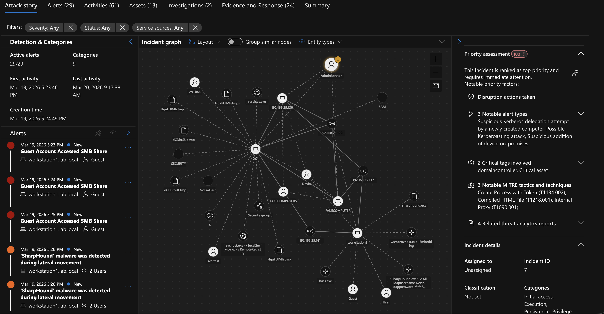
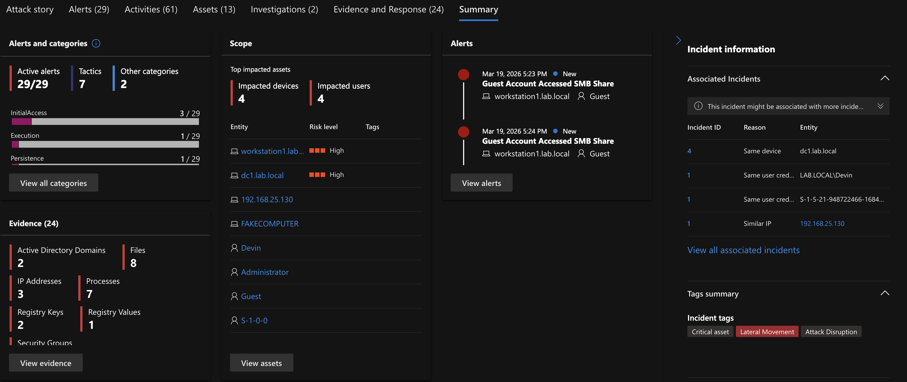
MITRE ATT&CK Mapping
Technique coverage across the full attack chain
| Phase | Tactic | Technique | ID | Data Sources |
|---|---|---|---|---|
| Guest Brute Force | Credential Access | Brute Force | T1110.001 | SecurityEvent 4625/4624, Sysmon EID 3 |
| SMB Share Access | Discovery | Network Share Discovery | T1135 / T1039 | SecurityEvent 5140/5145, Sysmon EID 1/3 |
| Lateral Movement (Bob) | Lateral Movement | Valid Accounts | T1078.002 | SecurityEvent 4624, Sysmon EID 1 |
| Kerberoasting | Credential Access | Kerberoasting | T1558.003 | SecurityEvent 4769, Sysmon EID 1/3 |
| BloodHound Enum | Discovery | Account/Trust Discovery | T1087.002 / T1482 | Sysmon EID 1/3/22, IdentityQueryEvents |
| RBCD Attack | Privilege Escalation | Delegation Abuse | T1134.002 / T1550.003 | SecurityEvent 4741/4662/5136/4769, Sysmon EID 1/3 |
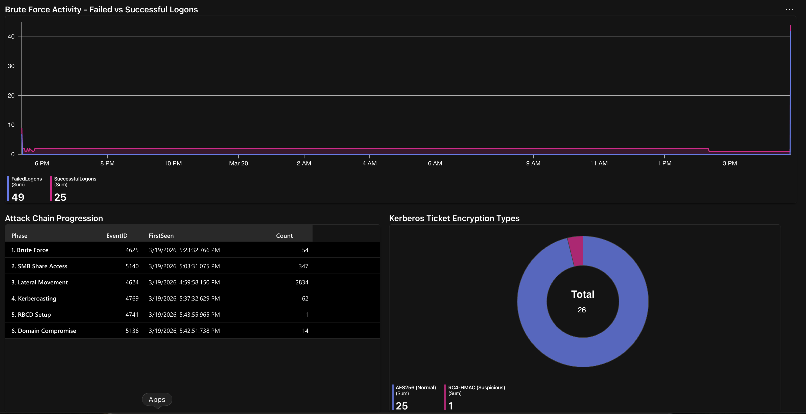
Phase-by-Phase Detection Walkthrough
Brute Force → SMB Share Enum → Lateral Movement → Kerberoasting → BloodHound Enumeration → RBCD Domain Compromise
Phase 1: Guest Account Brute Force
▶XDR correlated brute force alerts. A custom "Guest Account Accessed SMB Share" analytics rule fired at 5:23 PM. The Guest account was brute forced from 192.168.25.130 with 13 failed attempts over 1 minute before a successful logon.
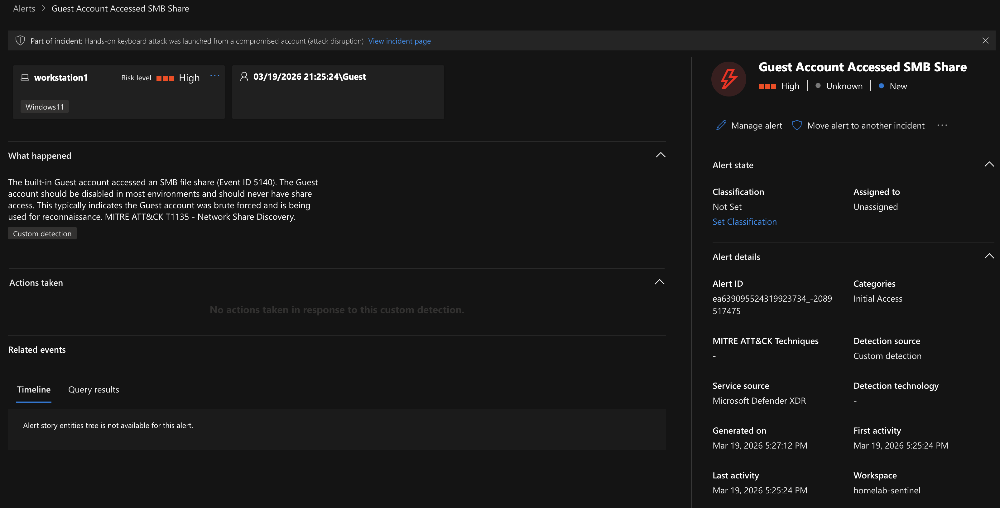
nxc ldap 'Guest' -p /usr/share/wordlists/targetedlist.txt
KQL: Brute Force Detection
SecurityEvent
| where EventID == 4625
| summarize FailedAttempts = count(),
StartTime = min(TimeGenerated),
EndTime = max(TimeGenerated)
by TargetAccount, IpAddress, Computer
| where FailedAttempts >= 5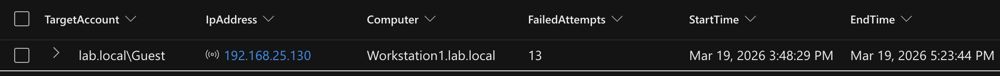
KQL: MDI Brute Force Followed by Success
IdentityLogonEvents
| where ActionType == "LogonFailed"
| where AccountName has "Guest"
| extend FailCount = AdditionalFields.Count
| where FailCount >= 5
| join kind=inner (
IdentityLogonEvents
| where ActionType == "LogonSuccess"
| where AccountName has "Guest"
| project AccountName, IPAddress, SuccessTime = Timestamp
) on AccountName, IPAddress
| where SuccessTime > Timestamp
| project AccountName, FailCount, Timestamp, SuccessTime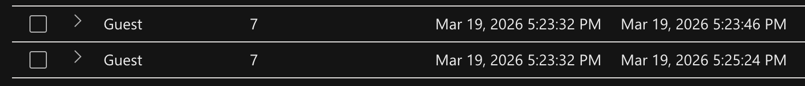
Finding
The Guest account should be disabled. Recommendation: disable the Guest account, enforce account lockout policies, and audit share permissions.
Phase 2: SMB Share Enumeration
▶The compromised Guest account accessed SMB shares on DC1 and read a file containing Devin's plaintext password.
nxc smb 192.168.25.141 -u 'Guest' -p '...' --shares # Then spider_plus for download
KQL: SMB Share Access Detection
SecurityEvent
| where EventID == 5145
| where SubjectUserName has "guest"
| where ShareName has "DevinStuff"
| project TimeGenerated, SubjectUserName, ShareName,
RelativeTargetName, AccessMask, IpAddress
| order by TimeGenerated asc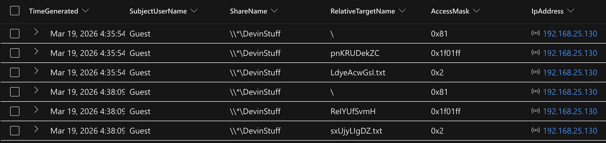
Analyst Insight
Sysmon EID 3 misses inbound connections by default, which is why you need SecurityEvent 5145 for SMB share access detection.
Phase 3: Lateral Movement via Valid Accounts
▶The attacker authenticated as Devin from 192.168.25.130 to Workstation1 within 50 minutes of stealing credentials. XDR flagged this as a compromised account conducting a hands-on-keyboard attack.
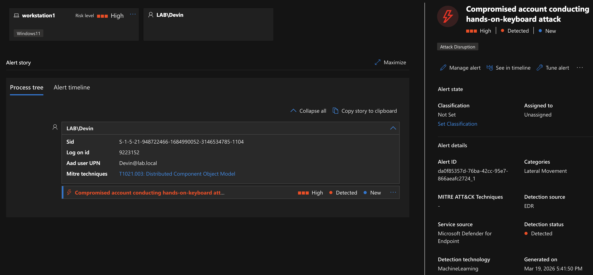
KQL: Lateral Movement Detection
SecurityEvent
| where EventID == 4624
| where LogonType in (3, 10)
| where IpAddress has "192.168.25.130"
| where TargetAccount has "Devin"
| project TimeGenerated, TargetAccount, IpAddress,
LogonType, Computer
| order by TimeGenerated asc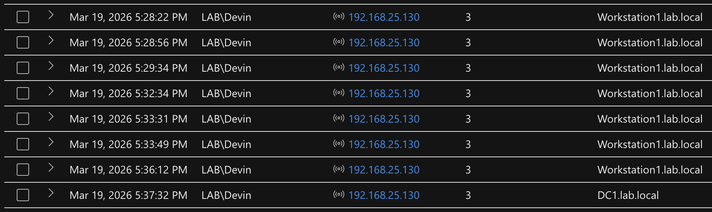
Phase 4: Kerberoasting
▶The attacker used NetExec to request Kerberos service tickets with RC4 encryption, then cracked them offline with John the Ripper.
nxc ldap 192.168.25.137 -u 'Devin' -p '...' --kerberoasting kerbroast.txt john --wordlist=/usr/share/wordlists/rockyou.txt kerbroast.txt
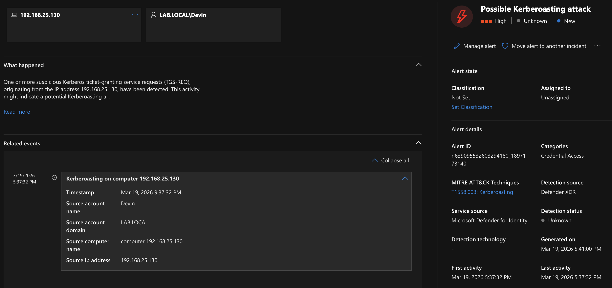
KQL: Kerberoasting Detection (SecurityEvent 4769)
SecurityEvent
| where EventID == 4769
| parse EventData with * '<Data Name="TicketEncryptionType">' TicketEncryptionType '</Data>' *
| parse EventData with * '<Data Name="TargetUserName">' TargetUserName '</Data>' *
| where TicketEncryptionType == "0x17"
| where TargetUserName !has "$"
| project TimeGenerated, TargetUserName, Computer, TicketEncryptionType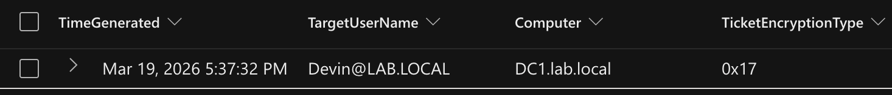
KQL: MDI Kerberoasting Query
IdentityQueryEvents
| where ActionType == "LDAP query"
| where AdditionalFields has "servicePrincipalName"
or AdditionalFields has "T1558.003"
| project Timestamp, DeviceName, AdditionalFields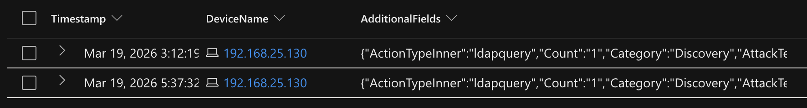
Security Onion: Zeek Kerberos Validation
source.ip : 192.168.25.130 AND event.dataset : zeek.kerberos AND zeek.kerberos.cipher : "rc4-hmac"
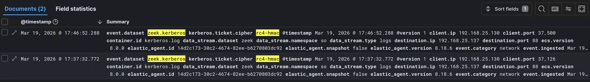
Finding
SecurityEvent 4769 confirmed the RC4 encryption downgrade. Zeek kerberos.log independently validated the RC4 cipher at the network level.
Analyst Insight
Kerberoasting from Kali is invisible to Sysmon (no agent). Detection relies on SecurityEvent 4769 on DC1 and Zeek kerberos.log.
Phase 5: BloodHound/SharpHound Enumeration
▶The attacker used Evil-WinRM to connect to Workstation1 as Devin, uploaded SharpHound.exe, and ran it with -c All to enumerate the entire Active Directory environment.
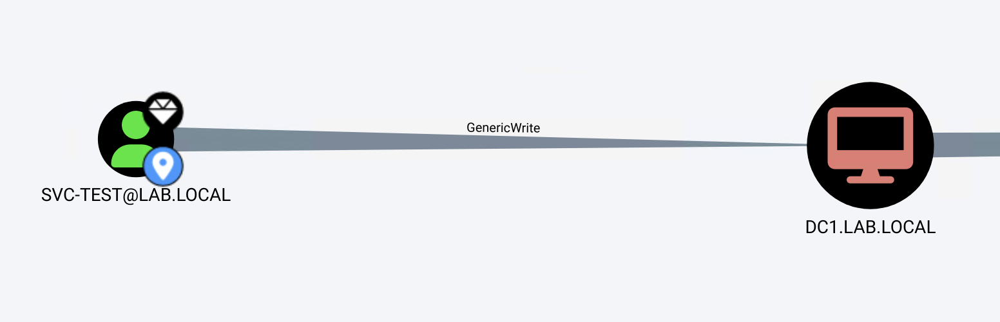
Key Insight
Evil-WinRM uses standard WinRM protocol. The detection signal is not the connection but the context: a service account establishing a WinRM session from a non-management IP, followed by offensive tooling execution.
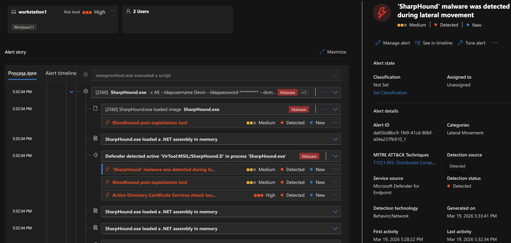
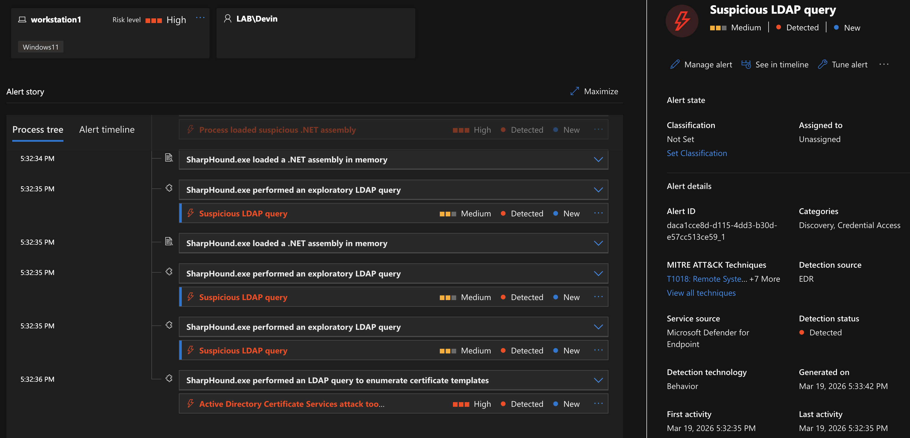
KQL: MDE WinRM Session Detection
DeviceLogonEvents
| where DeviceName has "Workstation1"
| where RemoteIP has "192.168.25.130"
| where AccountName has "Devin"
| project Timestamp, DeviceName, AccountName, RemoteIP,
LogonType, Protocol
| order by Timestamp asc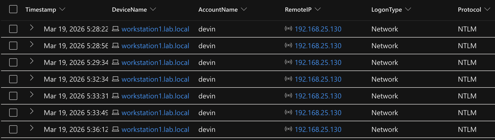
KQL: Sysmon SharpHound File Drop (EID 11)
Event
| where Source == "Microsoft-Windows-Sysmon" and EventID == 11
| where Computer has "Workstation1"
| parse EventData with * '<Data Name="TargetFilename">' TargetFile '</Data>' *
| parse EventData with * '<Data Name="Image">' Image '</Data>' *
| parse EventData with * '<Data Name="User">' User '</Data>' *
| where TargetFile has_any ("SharpHound", "sharphound",
"BloodHound", "bloodhound")
or TargetFile endswith ".exe" and Image has "wsmprovhost"
| project User, Image, TargetFile, Computer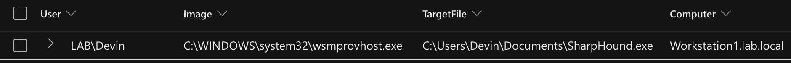
KQL: MDE SharpHound Execution
DeviceProcessEvents
| where DeviceName has "workstation1"
| where ProcessCommandLine has_any ("SharpHound", "sharphound",
"-c All", "CollectionMethod", "--CollectionMethods")
or FileName has_any ("SharpHound", "sharphound")
| project Timestamp, DeviceName, AccountName, FileName,
ProcessCommandLine, InitiatingProcessFileName,
InitiatingProcessCommandLine
| order by Timestamp asc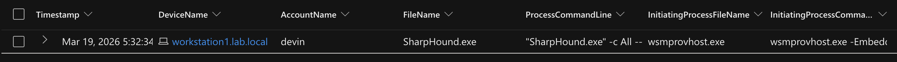
Security Onion: Full Two-Hop Attack View
(source.ip : 192.168.25.130 AND destination.ip : 192.168.25.141) OR (source.ip : 192.168.25.141 AND destination.ip : 192.168.25.137)
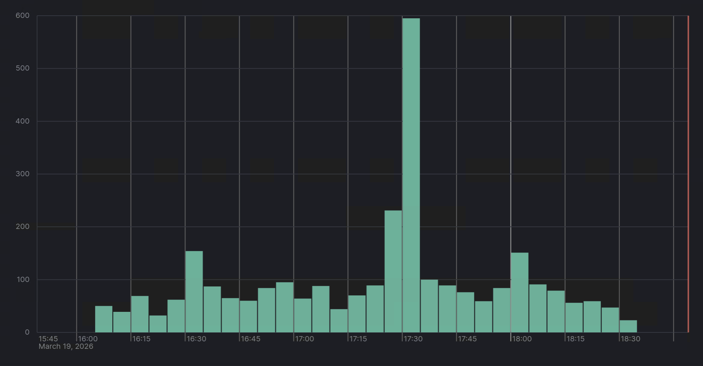
Finding
This shows both network hops in one view: Kali to Workstation1 (Evil-WinRM) and Workstation1 to DC1 (SharpHound LDAP). First the WinRM session establishes, then the LDAP burst fires.
Analyst Insight
Running SharpHound from a managed endpoint (Workstation1) instead of Kali unlocked MDE detection. If BloodHound-Python ran from Kali, the only detection would have been MDI's LDAP query alert.
Finding
SharpHound revealed svc-test has GenericWrite over DC1's computer object, enabling the RBCD attack.
Phase 6: RBCD Domain Compromise
▶With GenericWrite over DC1's computer object, the attacker executed a Resource-Based Constrained Delegation (RBCD) attack to achieve full domain compromise.
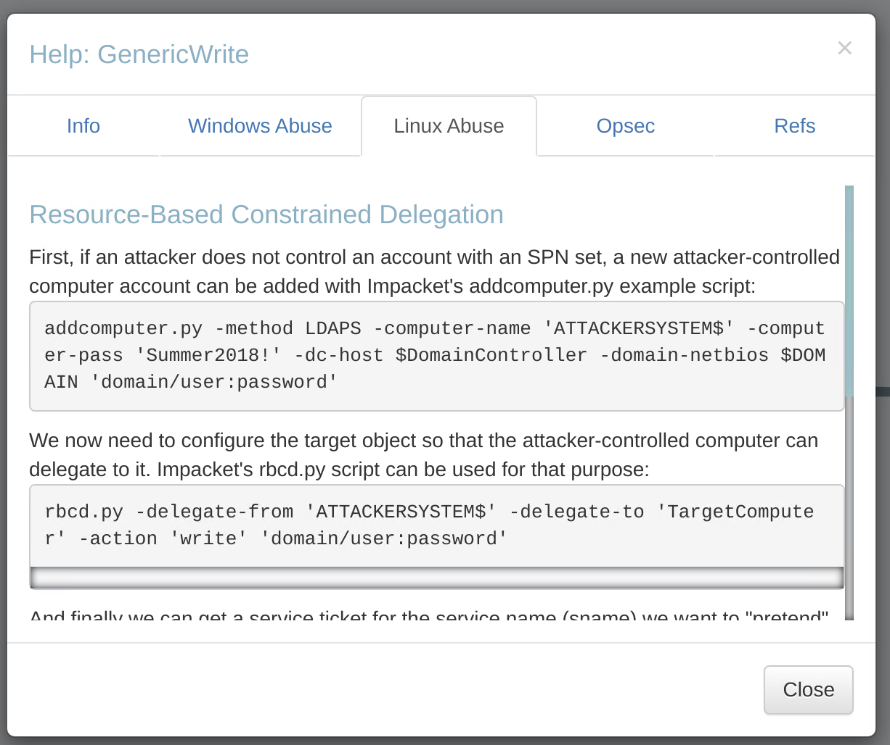
Attack Sequence
impacket-addcomputer— create FAKECOMPUTER$impacket-rbcd— set RBCD attribute on DC1impacket-getST— S4U attack to get admin ticketimpacket-secretsdump— dump all hashes
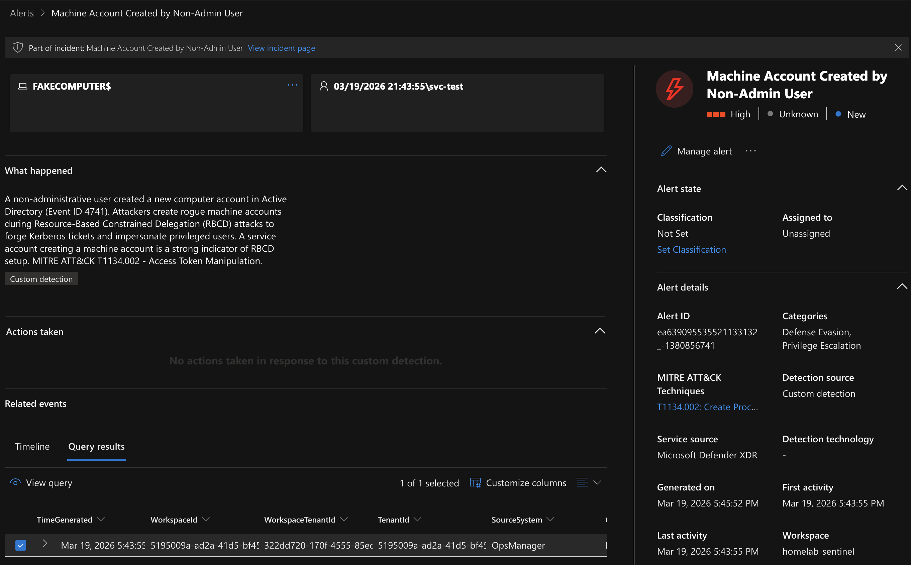
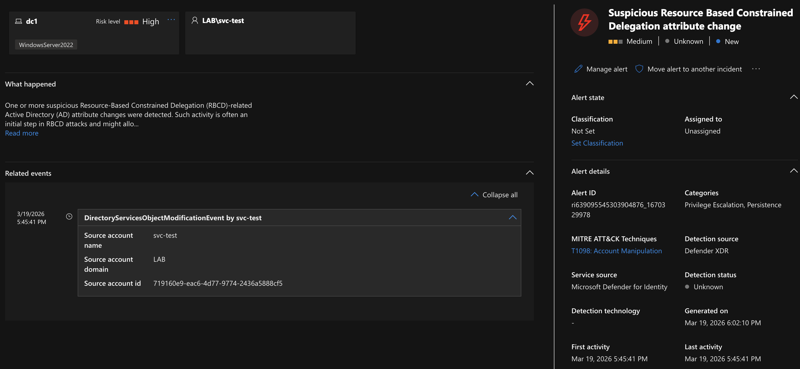
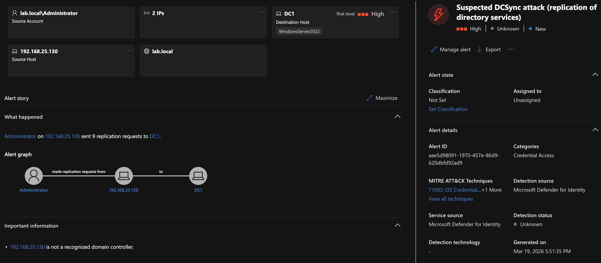
KQL: New Machine Account Creation (4741)
SecurityEvent
| where EventID == 4741
| parse EventData with * '<Data Name="ObjectDN">' ObjectDN '</Data>' *
| parse EventData with * '<Data Name="SubjectUserName">' SubjectUserName '</Data>' *
| parse EventData with * '<Data Name="TargetUserName">' TargetUserName '</Data>' *
| project TimeGenerated, CreatedBy = SubjectUserName, NewComputer = TargetUserName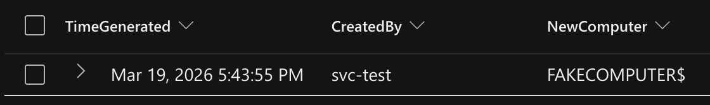
KQL: RBCD Attribute Modification (Critical — 5136)
SecurityEvent
| where EventID == 5136
| parse EventData with * '<Data Name="AttributeLDAPDisplayName">' AttributeLDAPDisplayName '</Data>' *
| parse EventData with * '<Data Name="AttributeValue">' AttributeValue '</Data>' *
| parse EventData with * '<Data Name="ObjectDN">' ObjectDN '</Data>' *
| parse EventData with * '<Data Name="OperationType">' OperationType '</Data>' *
| where AttributeLDAPDisplayName == "msDS-AllowedToActOnBehalfOfOtherIdentity"
| project TimeGenerated, SubjectUserName, ObjectDN,
AttributeLDAPDisplayName, AttributeValue, OperationType, Computer
| order by TimeGenerated asc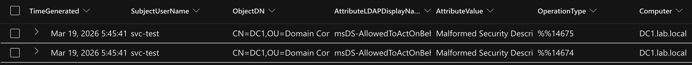
KQL: MDE Multi-Protocol Network Footprint
DeviceNetworkEvents
| where DeviceName has "DC1"
| where RemoteIP has "192.168.25.130"
| where LocalPort in (88, 135, 389, 445, 636)
| summarize ConnectionCount = count(), Ports = make_set(LocalPort)
by RemoteIP, DeviceName
| where array_length(Ports) >= 3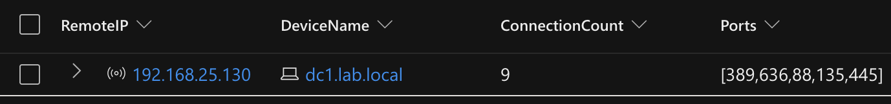
Security Onion: Multi-Protocol RBCD Network Footprint
source.ip : 192.168.25.130 AND destination.ip : 192.168.25.137 AND destination.port : (88 OR 389 OR 445)
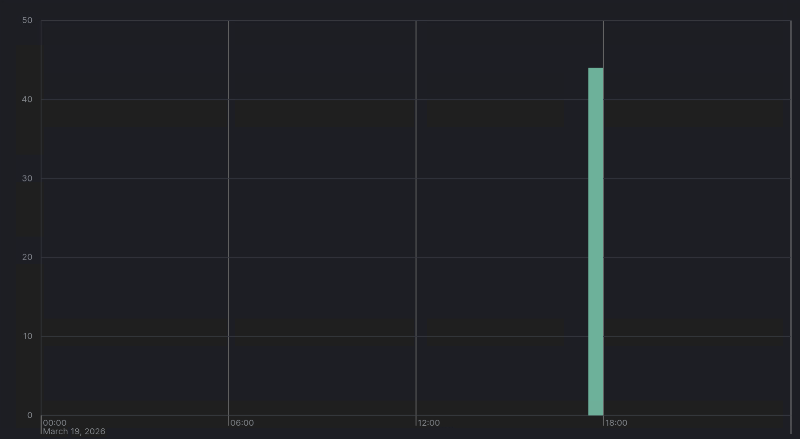
Finding
LDAP, Kerberos, and SMB connections in rapid succession from Kali to DC1. This is the network-level evidence of the RBCD chain.
Finding — Complete Domain Compromise
svc-test's GenericWrite ACL on DC1's computer object was exploited. FAKECOMPUTER$ was created, DC1's msDS-AllowedToActOnBehalfOfOtherIdentity was modified, S4U2Proxy forged a Domain Admin ticket. Complete domain compromise.
Remediation Recommendations
Prioritized hardening actions mapped to each attack phase
Automatic Remediation — XDR Attack Disruption
Before any manual intervention, Microsoft Defender XDR automatically triggered Attack Disruption in response to the unified incident. MDE and MDI took immediate containment actions — disabling the compromised accounts, suspending the user in Azure AD, and blocking lateral movement paths — effectively halting the kill chain while the investigation was still underway. The screenshot below shows every automated action taken by the platform.
Why This Matters
Automated remediation is a force multiplier for SOC teams. In a production environment, these actions would have contained the threat within minutes of initial detection — before an analyst even opened the incident. Understanding what the platform does automatically helps analysts focus their investigation on what the automation didn't catch.
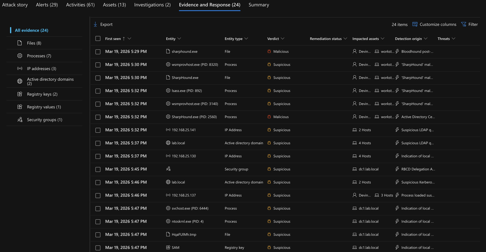
Manual Remediation Recommendations
Beyond the automated response, the following hardening actions are recommended to prevent recurrence, mapped to each attack phase:
- Phase 1 — Brute Force: Disable the Guest account, enforce account lockout (5 attempts, 15-minute lockout).
- Phase 2 — SMB Share Exposure: Remove plaintext credentials from shares, implement a password vault, audit share permissions.
- Phase 3 — Lateral Movement: Implement conditional access policies, restrict sensitive accounts to known management IPs.
- Phase 4 — Kerberoasting: Enforce AES-only Kerberos, use Group Managed Service Accounts (gMSAs), 25+ character service account passwords.
- Phase 5 — BloodHound Enumeration: Restrict WinRM to management IPs, enable PowerShell Constrained Language Mode, audit ACLs on computer objects.
- Phase 6 — RBCD Domain Compromise: Set
ms-DS-MachineAccountQuotato 0, remove unnecessary write permissions, monitormsDS-AllowedToActOnBehalfOfOtherIdentity, implement tiered administration, reset KRBTGT password twice.
Lessons Learned
Key takeaways from the investigation
1. XDR Unified Correlation
XDR unified correlation transformed the investigation — 29 alerts collapsed into 1 incident, providing immediate kill-chain visibility across all 7 ATT&CK tactics.
2. Custom + Vendor Detection Synergy
Custom detection rules (Guest SMB share access) integrated with vendor alerts (MDI brute force, MDE hands-on-keyboard) to provide layered coverage.
3. Sysmon Blind Spots
Sysmon has inherent blind spots for unmanaged hosts. Kerberoasting, SMB enumeration, and Impacket tools executed from Kali left no Sysmon traces — only Windows Security Events and network telemetry provided coverage.
4. Managed Endpoint Advantage
Running SharpHound from a managed endpoint (Workstation1) improved detection significantly. MDE captured process execution, file creation, and command-line arguments that would have been invisible from Kali.
5. Multi-Source Correlation
Multi-source correlation is the strongest evidence pattern. Combining SecurityEvent logs, Sysmon, MDE, MDI, and Zeek provided overlapping detection that no single source could achieve alone.
6. Attack Disruption Speed
Attack Disruption reduced time-to-contain to seconds. XDR's automatic containment of compromised accounts limited the blast radius before analyst intervention.
7. Detection Gap Awareness
Detection gap awareness is more valuable than detection perfection. Knowing where your blind spots are (unmanaged hosts, LDAP-only queries) allows you to build compensating controls.
8. RBCD as a Modern Threat
RBCD is a realistic modern threat most environments are not prepared to detect. Monitoring msDS-AllowedToActOnBehalfOfOtherIdentity modifications and machine account creation are critical detection controls that few organizations have in place.